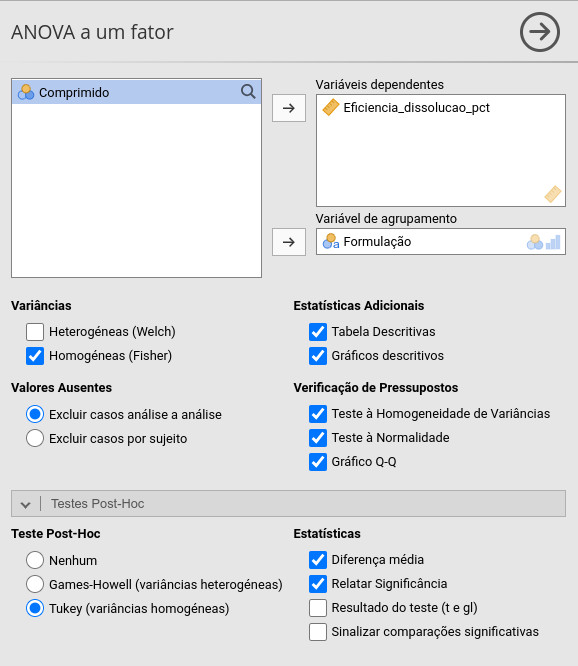
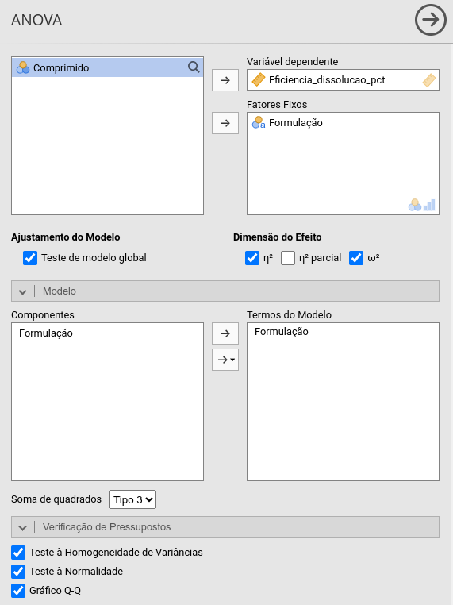
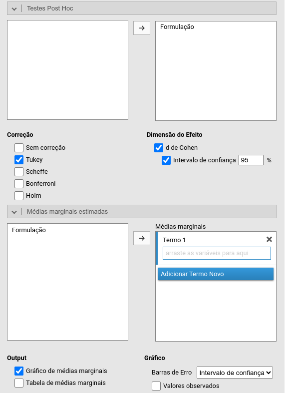
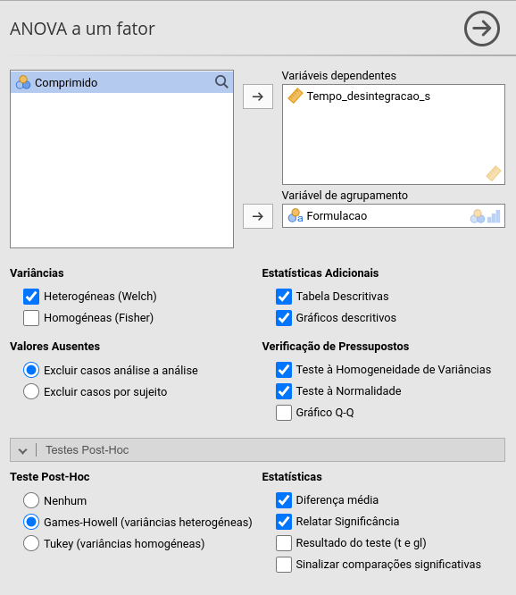
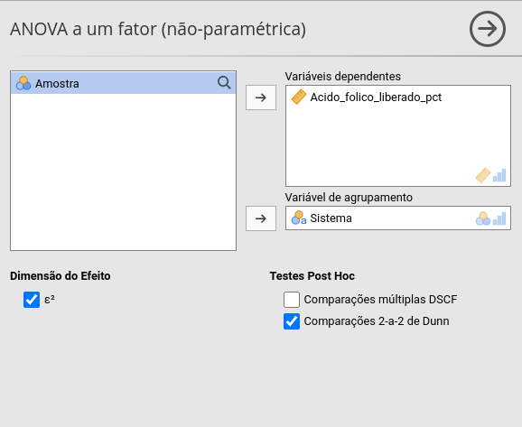
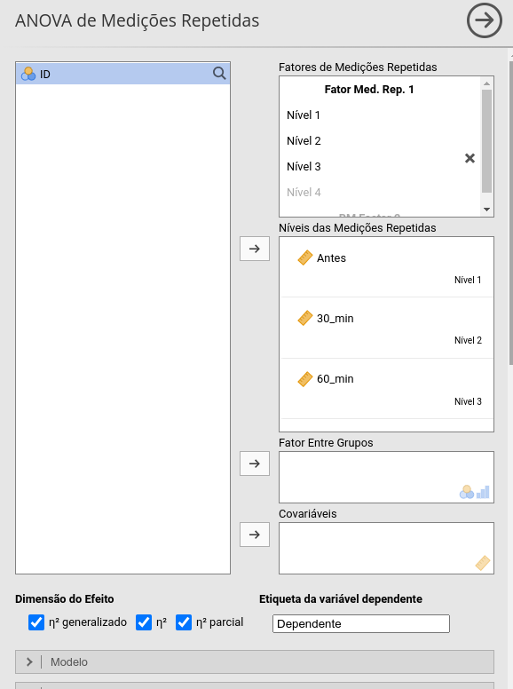
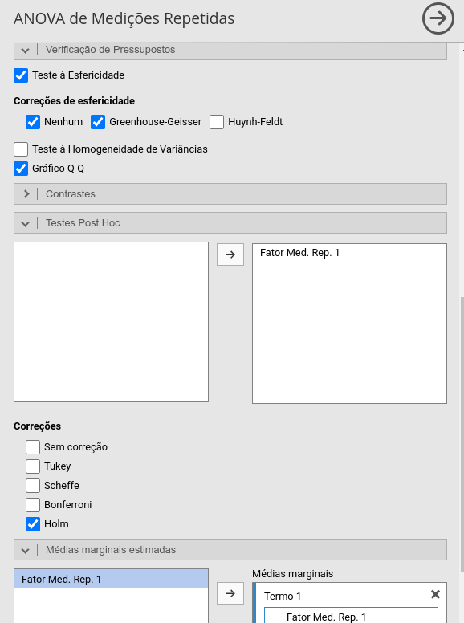
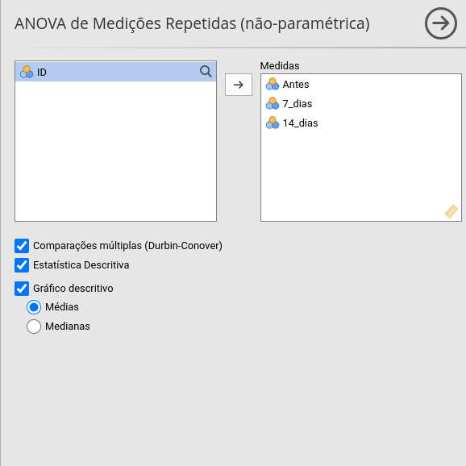
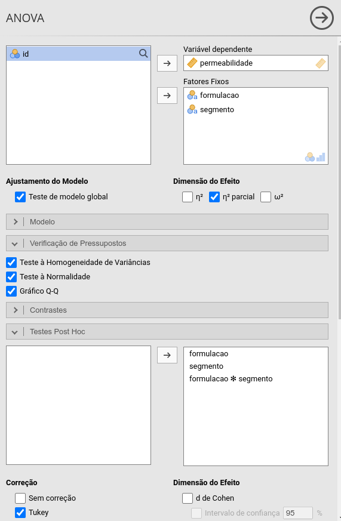
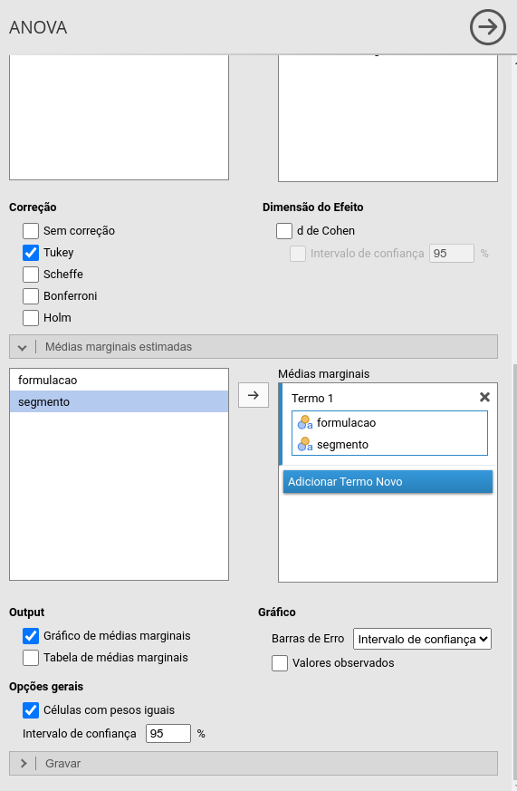

Comparação de mais de dois grupos
Prof. Dr. Sadraque E. F. Lucena
http://sadraquelucena.github.io/FARMA0048
FARMA0048 - Bioestatística
Programa de Pós-Graduação em Ciências Farmacêuticas (PPGCF)
O que determina o método?
Nesta aula, vamos assumir que o desfecho é quantitativo.
A escolha do método depende principalmente da estrutura do estudo:
- Grupos independentes
- Medidas repetidas no mesmo indivíduo
- Um ou mais fatores
- Pressupostos do modelo
O que veremos
Mais de dois grupos independentes
- ANOVA
- Welch
- Kruskal-Wallis
- Comparações post hoc
Mais de duas medidas no mesmo indivíduo
- ANOVA de medidas repetidas
- Friedman
Mais de um fator
- ANOVA de duas vias
- Interação
- Efeitos simples
Mais de dois grupos independentes
ANOVA de uma via
Exemplo
Um estudo avaliou a concentração plasmática de um fármaco após a administração de três formulações:
- Formulação A
- Formulação B
- Formulação C
Cada participante recebeu uma única formulação.
- Pergunta: A concentração plasmática média difere entre as três formulações?
ANOVA
- Compara a média de um desfecho quantitativo entre três ou mais grupos independentes
- Testa se pelo menos a média do desfecho de um grupo difere das demais
- O modelo é válido se há:
- Distribuição aproximadamente normal dos resíduos (teste de Shapiro-Wilk)
- Se p-valor > 0,05: ok
- Se p-valor < 0,05: usar teste de Kruskal-Wallis
- Homogeneidade das variâncias (teste de Levene)
- Se p-valor > 0,05: ok (variâncias homogêneas)
- Se p-valor < 0,05: mudar para ANOVA de Welch
- Distribuição aproximadamente normal dos resíduos (teste de Shapiro-Wilk)
ANOVA
- A ANOVA é um teste global: não identifica quais grupos diferem
- Se p-valor < 0,05: realize comparações múltiplas (Tukey HSD)
- Se p-valor > 0,05: não há evidência suficiente de diferença entre as médias
- Informe:
- Média ± desvio padrão de cada grupo
- Estatística \(F\), graus de liberdade e p-valor
- Tamanho do efeito: \(\eta^2\) ou \(\omega^2\) (conservador)
- Indica a magnitude da associação entre o fator e a variabilidade do desfecho
Teste de Tukey HSD (post-hoc)
O Tukey HSD realiza comparações entre todos os pares de médias
Para cada comparação, apresenta:
- Diferença entre médias
- Intervalo de confiança de 95%
- p-valor ajustado
Se \(p\)-valor < 0,05: há diferença entre as médias do par avaliado
Exemplo 4.1
Em um estudo publicado na Revista Brasileira de Ciências Farmacêuticas, pesquisadores avaliaram comprimidos de ciprofloxacino 250 mg de diferentes produtos comercializados no Brasil e compararam estatisticamente a eficiência de dissolução. Imagine que um laboratório farmacêutico queira comparar quatro formulações de comprimidos de ciprofloxacino 250 mg (Referência, Genérico A, Genérico B e Genérico C). Foram avaliados 10 comprimidos de cada formulação. Para cada comprimido, foi determinada a eficiência de dissolução (%).
Pergunta de pesquisa: a eficiência média de dissolução difere entre as formulações?
Dados: exemplo4.1.csv

Para obter o tamanho do efeito:


Exemplo 4.1
Resultados
A eficiência de dissolução diferiu entre as formulações, \(F(3,36)=69{,}7\), \(p<0{,}001\), com grande magnitude de efeito (\(\omega^2=0{,}837\)).
O teste de Tukey HSD mostrou diferença entre:
- Genérico A e Genérico B (\(p<0{,}001\));
- Genérico A e Genérico C (\(p<0{,}001\));
- Genérico A e Referência (\(p=0{,}001\));
- Genérico B e Genérico C (\(p<0{,}001\));
- Genérico B e Referência (\(p<0{,}001\)).
Não foi observada diferença significativa entre o Genérico C e a Referência (\(p=0{,}223\)).
ANOVA de Welch
- É uma alternativa à ANOVA tradicional quando há heterogeneidade das variâncias
- Não pressupõe que as variâncias dos grupos sejam iguais
- É especialmente útil quando os grupos apresentam tamanhos amostrais diferentes
- Assim como a ANOVA tradicional, é um teste global
- Se \(p\)-valor < 0,05, realize comparações múltiplas (Games-Howell)
- Informe:
- Média ± desvio padrão de cada grupo
- Estatística de Welch, graus de liberdade e p-valor
- Tamanho do efeito
Exemplo 4.2
Imagine que um laboratório farmacêutico queira comparar o tempo de desintegração de cinco formulações de comprimidos orodispersíveis:
- D1: 1% EMCS
- D2: 5% EMCS
- D3: 1% SSP
- D4: 5% SSP
- D5: 3% EMCS
Foram avaliados 8 comprimidos de cada formulação. Para cada comprimido, foi determinado o tempo de desintegração, em segundos.
Pergunta de pesquisa: o tempo médio de desintegração difere entre as formulações?
Dados: exemplo4.2.csv

Exemplo 4.2
Resultados
O tempo de desintegração diferiu entre as formulações, \(F(3,18{,}4)=11{,}1\), \(p<0{,}001\).
O teste de Games-Howell mostrou diferença entre:
- Formulação A e Formulação B (diferença média = \(-3{,}81\) s; \(p=0{,}003\));
- Formulação A e Formulação C (diferença média = \(-9{,}10\) s; \(p=0{,}007\));
- Formulação A e Formulação D (diferença média = \(-10{,}33\) s; \(p=0{,}039\)).
Não foram observadas diferenças significativas entre:
- Formulação B e Formulação C (\(p=0{,}130\));
- Formulação B e Formulação D (\(p=0{,}241\));
- Formulação C e Formulação D (\(p=0{,}987\)).
Teste de Kruskal-Wallis
- Compara a distribuição de um desfecho quantitativo ou ordinal entre três ou mais grupos independentes
- Não pressupõe distribuição normal do desfecho
- É um teste global
- Se significativo (em geral, p-valor < 0,05), realize comparações múltiplas (Dunn)
- Ajuste os p-valores para múltiplas comparações (Holm)
- Informe:
- Mediana e intervalo interquartil de cada grupo
- Estatística \(H\), graus de liberdade e p-valor
- Tamanho do efeito, quando disponível
Exemplo 4.3
Imagine que um laboratório farmacêutico queira comparar a quantidade de ácido fólico liberada, após determinado período por três sistemas num ensaio in vitro:
- Ácido fólico cristalino
- ZnAl-LDH-ácido fólico
- MgAl-LDH-ácido fólico
Foram realizadas 12 determinações para cada sistema. Para cada amostra, foi determinado o percentual de ácido fólico liberado.
Pergunta de pesquisa: a distribuição do percentual de ácido fólico liberado difere entre os sistemas?
Dados: exemplo4.3.csv

Exemplo 4.3
Resultados
A distribuição do percentual de ácido fólico liberado diferiu entre os sistemas, \(\chi^2(2)=19{,}44\), \(p<0{,}001\), com grande magnitude de efeito (\(\varepsilon^2=0{,}56\)).
As comparações múltiplas pelo teste de Dunn, com ajuste de Bonferroni, mostraram diferença entre:
ZnAl-LDH-ácido fólico e MgAl-LDH-ácido fólico (\(p=0{,}002\));
ZnAl-LDH-ácido fólico e ácido fólico cristalino (\(p<0{,}001\)).
Não foi observada diferença significativa entre MgAl-LDH-ácido fólico e ácido fólico cristalino (\(p=1{,}000\)).
Mais de duas medidas no mesmo indivíduo
ANOVA de medidas repetidas
Exemplo
Um estudo avaliou a concentração plasmática de um fármaco em três momentos após a administração:
- Antes do tratamento
- 30 minutos
- 60 minutos
Cada participante foi avaliado nos três momentos.
- Pergunta: A concentração plasmática média difere entre os três momentos?
ANOVA de medidas repetidas
Compara a média de um desfecho quantitativo em três ou mais momentos ou condições no mesmo indivíduo
Testa se pelo menos a média do desfecho de um momento difere das demais
O modelo é válido se há:
Distribuição aproximadamente normal dos resíduos
Esfericidade das medidas repetidas (teste de Mauchly)
- Se \(p\)-valor > 0,05: ok
- Se \(p\)-valor < 0,05: aplicar correção de Greenhouse–Geisser
ANOVA de medidas repetidas
A ANOVA é um teste global: não identifica quais momentos diferem
Se \(p\)-valor < 0,05: realize comparações múltiplas entre os momentos
Se \(p\)-valor > 0,05: não há evidência suficiente de diferença entre as médias
Informe:
Média ± desvio padrão de cada momento
Estatística \(F\), graus de liberdade e p-valor
Tamanho do efeito: \(\eta^2_p\) (eta quadrado parcial)
Comparações múltiplas
Para cada comparação, apresentam:
- Diferença entre médias
- Intervalo de confiança de 95%
- p-valor ajustado
O ajuste controla o aumento do erro decorrente das múltiplas comparações
No jamovi, pode-se utilizar o ajuste de Holm (preferencial) ou Bonferroni
Se \(p\)-valor < 0,05: há diferença entre as médias dos momentos comparados
Exemplo 4.4
Um estudo avaliou a concentração plasmática de um fármaco em 15 participantes após a administração de uma dose oral. A concentração foi medida em três momentos:
- Antes da administração
- 30 minutos após a administração
- 60 minutos após a administração
Cada participante foi avaliado nos três momentos.
Pergunta: A concentração plasmática média difere entre os três momentos?
Dados: exemplo4.4.csv


Exemplo 4.4
Resultados
O teste de Mauchly indicou violação da esfericidade (\(W=0{,}14\), \(p<0{,}001\)). Portanto, foi aplicada a correção de Greenhouse–Geisser (\(\varepsilon=0{,}54\)).
A concentração plasmática diferiu entre os momentos, \(F(1{,}08,15{,}08)=4312{,}3\), \(p<0{,}001\), com grande magnitude de efeito (\(\eta_p^2=0{,}997\)).
As comparações múltiplas, com ajuste de Holm, mostraram diferença entre:
- Antes e 30 minutos (\(p<0{,}001\));
- Antes e 60 minutos (\(p<0{,}001\));
- 30 e 60 minutos (\(p<0{,}001\)).
Teste de Friedman
Compara a distribuição de um desfecho quantitativo ou ordinal entre três ou mais medidas dependentes
Não pressupõe distribuição normal do desfecho
É um teste global
- Se significativo (em geral, p-valor < 0,05), realize comparações múltiplas (Durbin–Conover)
Informe:
Mediana e intervalo interquartil de cada momento/condição
Estatística \(\chi^2\), graus de liberdade e p-valor
Tamanho do efeito: \(\varepsilon^2\)
Exemplo 4.5
Um estudo avaliou a intensidade de náusea em 15 pacientes durante um tratamento farmacológico. A intensidade dos sintomas foi registrada em uma escala de 0 a 10 em três momentos:
- Antes do tratamento
- 7 dias
- 14 dias
Cada paciente foi avaliado nos três momentos.
Pergunta: A distribuição da intensidade da náusea difere entre os três momentos?
Dados: exemplo4.5.csv

Exemplo 4.5
Resultados
A distribuição da intensidade da náusea diferiu entre os momentos, \(\chi^2(2)=30{,}0\), \(p<0{,}001\).
As comparações múltiplas pelo teste de Durbin–Conover, com ajuste de Holm, mostraram diferença entre:
- Antes e 7 dias (\(p<0{,}001\));
- Antes e 14 dias (\(p<0{,}001\));
- 7 e 14 dias (\(p<0{,}001\)).
A intensidade da náusea apresentou redução progressiva ao longo do tratamento.
Mais de um fator
ANOVA de duas vias
Compara a média de um desfecho quantitativo entre grupos formados pela combinação de dois fatores independentes
Permite avaliar:
- Efeitos principais: efeito isolado de cada fator
- Interação: se o efeito de um fator depende do nível do outro
O modelo é válido se há:
- Distribuição aproximadamente normal dos resíduos (Shapiro-Wilk)
- Homogeneidade das variâncias entre os grupos (Levene)
O que fazer ao violar os pressupostos?
Violação da Normalidade
- Se leve/moderada e \(n\) razoável: A ANOVA ainda é confiável (robustez do modelo).
- Se severa: Aplique transformação de dados (ex: \(\log(X)\), \(\sqrt{X}\)) ou métodos de permutação/bootstrapping.
Violação da Homogeneidade (Levene \(p < 0{,}05\))
- Se o experimento for balanceado \(n\) igual nos grupos): A ANOVA é razoavelmente robusta.
- Se os \(n\) forem desiguais ou a diferença de variância for alta:
- Utilize Erros-Padrão Robustos a Heterocedasticidade (correção HC3).
- Aplique transformação logarítmica para estabilizar as variâncias.
ANOVA de duas vias
A interpretação depende do termo de interação:
- Se a interação for significativa (\(p < 0{,}05\)):
- O efeito de um fator muda conforme o outro
- Analise os efeitos simples ou o teste post-hoc de Tukey no termo combinado
- Se a interação NÃO for significativa (\(p > 0{,}05\)):
- Os fatores atuam de forma independente
- Interprete os efeitos principais separadamente
- Se a interação for significativa (\(p < 0{,}05\)):
Informe:
- Média ± desvio padrão de cada combinação
- Estatística \(F\), graus de liberdade e p-valor (dos efeitos principais e da interação)
- Tamanho do efeito: \(\eta_p^2\) (eta quadrado parcial)
Conceito de Interação
- Ocorre interação quando o efeito de um fator sobre o desfecho se modifica dependendo do nível em que o outro fator se encontra.
Sem Interação
(Efeitos aditivos / Linhas paralelas) - O comportamento do Fator A é o mesmo em todos os níveis do Fator B.
Com Interação
(Efeitos não aditivos / Linhas se cruzam) - O efeito do Fator A muda significativamente conforme o nível do Fator B.
- Regra de Decisão: Se a interação for estatisticamente significativa (\(p < 0{,}05\)), os efeitos principais não devem ser interpretados isoladamente. Deve-se realizar a análise dos efeitos simples.
Exemplo 4.6
Um laboratório avaliou a taxa de permeabilidade ((10^{-6})) de um insumo farmacêutico ativo utilizando duas variáveis experimentais:
- Fator 1 (Formulação): Com Promotor de Absorção vs. Controle
- Fator 2 (Segmento Intestinal): Duodeno vs. Íleo
Foram utilizadas 8 amostras para cada combinação dos fatores ((2 = 4) grupos; (n = 32)).
- Perguntas de pesquisa:
- Existe interação entre a Formulação e o Segmento Intestinal?
- A permeabilidade difere entre as formulações?
- A permeabilidade difere entre os segmentos intestinais?
- Dados: exemplo4.6.csv


Exemplo 4.6
Resultados
Os pressupostos de normalidade (\(p = 0{,}920\)) e homogeneidade de variâncias (\(p = 0{,}502\)) foram atendidos.
Houve interação significativa entre Formulação e Segmento Intestinal sobre a permeabilidade, \(F(1, 28) = 29{,}5\), \(p < 0{,}001\), \(\eta_p^2 = 0{,}513\).
O teste post-hoc de Tukey revelou que:
No Duodeno, a formulação Com Promotor aumentou significativamente a permeabilidade comparada ao Controle (diferença média = \(3{,}99\); \(p < 0{,}001\));
No Íleo, a formulação Com Promotor não diferiu do Controle (diferença média = \(0{,}09\); \(p = 0{,}998\));
No grupo Controle, não houve diferença entre Duodeno e Íleo (\(p = 0{,}591\)).
Conclusão: O efeito do promotor de absorção depende da região intestinal, aumentando a permeabilidade apenas no duodeno.
Exercício 4.1
Um laboratório farmacêutico comparou a concentração plasmática (ng/mL) obtida após a administração de três formulações de um medicamento.
Grupo 1 (Formulação A): 12 participantes
Grupo 2 (Formulação B): 12 participantes
Grupo 3 (Formulação C): 12 participantes
Cada participante recebeu apenas uma das formulações, de modo que os grupos são independentes.
Pergunta de pesquisa: A concentração plasmática média difere entre as três formulações?
Dados: **exercicio4.1.csv*
Exercício 4.2
Um laboratório avaliou o tempo de desintegração (minutos) de três formulações farmacêuticas.
- Grupo 1 (Formulação A): 10 amostras
- Grupo 2 (Formulação B): 10 amostras
- Grupo 3 (Formulação C): 10 amostras
As amostras foram avaliadas de forma independente. Durante a análise exploratória, observou-se que a variabilidade do tempo de desintegração não é semelhante entre as formulações.
Perguntas de pesquisa: O tempo médio de desintegração difere entre as três formulações? Quais formulações apresentam diferenças entre si?
Dados: **exercicio4.2.csv*
Exercício 4.3
Um laboratório comparou três sistemas de liberação de um fármaco quanto ao percentual de fármaco liberado após um determinado período.
- Grupo 1 (Sistema A): 12 determinações
- Grupo 2 (Sistema B): 12 determinações
- Grupo 3 (Sistema C): 12 determinações
As determinações foram realizadas de forma independente. A distribuição dos resultados apresenta assimetria, com valores concentrados em uma faixa e alguns valores mais elevados.
Perguntas de pesquisa: A distribuição do percentual de fármaco liberado difere entre os três sistemas? Quais sistemas apresentam diferenças entre si?
Dados: **exercicio4.3.csv*
Exercício 4.4
Um estudo avaliou o efeito de uma intervenção sobre a pressão arterial sistólica (mmHg) de 18 participantes. A pressão arterial foi medida nos mesmos participantes em três momentos:
- Momento 1: antes da intervenção
- Momento 2: 30 minutos após a intervenção
- Momento 3: 60 minutos após a intervenção
Assim, cada participante apresenta três medidas de pressão arterial.
Perguntas de pesquisa: A pressão arterial sistólica média varia entre os três momentos? Em quais momentos existem diferenças entre si?
Dados: **exercicio4.4.csv*
Exercício 4.5
Quinze pacientes avaliaram a intensidade da dor, utilizando uma escala de 0 a 10, em três momentos durante um tratamento:
- Momento 1: antes do tratamento
- Momento 2: após 2 semanas
- Momento 3: após 4 semanas
As avaliações foram realizadas pelos mesmos pacientes nos três momentos.
Perguntas de pesquisa: O escore de dor difere entre os três momentos? Entre quais momentos existem diferenças?
Dados: **exercicio4.5.csv*
Exercício 4.6
Um experimento farmacêutico avaliou o efeito de duas variáveis experimentais sobre uma resposta farmacêutica.
- Fator 1 (Dose): Baixa vs. Alta
- Fator 2 (Temperatura): 20 °C vs. 30 °C vs. 40 °C
Foram utilizadas 8 replicações para cada combinação dos fatores (2 × 3 = 6 combinações; n = 48).
Perguntas de pesquisa: Existe interação entre a Dose e a Temperatura? A resposta difere entre as doses? A resposta difere entre as temperaturas? Caso exista interação, como o efeito da Dose se comporta em cada temperatura?
Dados: **exercicio4.6.csv*
Fim